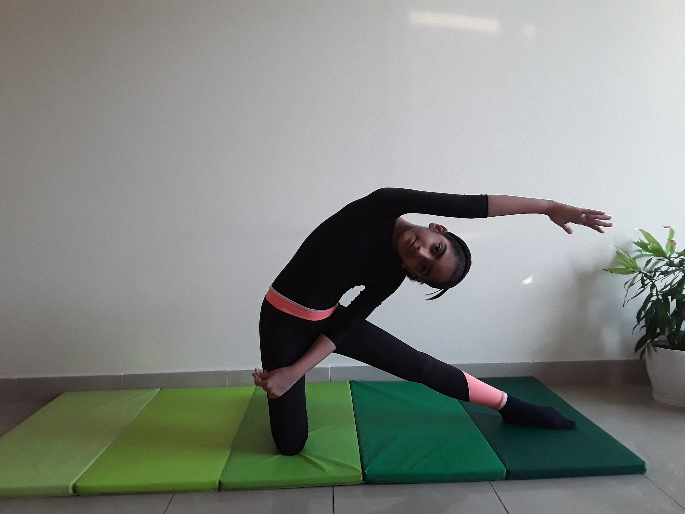

GATE POSE

Steps to perform Gate Pose
- Begin kneeling on the floor with your hips and buttocks lifted up off your legs. Place a folded blanket beneath your knees, shins, and feet if you need the extra padding to feel more comfortable. Your inner knees should be together and your thighs should be perpendicular to the floor.
-
Extend your right leg out to the side. Keep your leg in line with your body, not behind or in front of you. Point your toes to the right with your kneecap pointing to the ceiling. Try to press the sole of your right foot's sole all the way onto the floor while keeping your leg straight. Your pelvis will turn slightly to the right. Keep your upper torso turning against that pull to face forward.
-
Inhaling, extend your arms out to the sides to shoulder-height with your palms facing down.
-
Rest your right hand along your right thigh, shin, or ankle. Turn your left palm upward, and then extend it up toward the ceiling. Then reach your left arm overhead and to the right, so your bicep rests against your left ear. Turn your gaze up toward the ceiling.
-
Keep moving your left hip slightly forward and turning your torso away from the floor.
-
Hold for up to one minute. To release, inhale as you lift through your left arm to draw your torso upright, while keeping both arms extended. Then lower your arms and move your right knee next to your left to regain balance. Repeat the pose for the same amount of time on the opposite side.